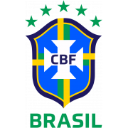
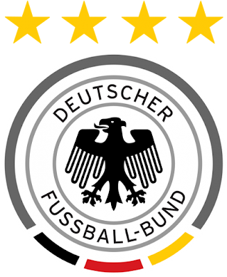

Brasil
Estilo ofensivo, tradição e talento em todas as posições.
- Títulos: 5
- Último: 2002
- Força: criatividade
Análise das seleções
Comparar seleções, estilos e campanhas é essencial para acompanhar a Copa do Mundo como um verdadeiro fã de carteirinha!

Estilo ofensivo, tradição e talento em todas as posições.

Atual campeã e com elenco competitivo em alto nível internacional.

Base jovem e experiente, com atletas decisivos em jogos grandes.

Reconstrução sólida e histórico de campanhas consistentes.

Equipe de posse de bola forte, com jovens talentos e tradição competitiva.

Seleção técnica, competitiva e com tradição crescente em torneios internacionais.

Camisa pesada, marcação intensa e histórico respeitado em Copas do Mundo.

Equipe organizada e em ascensão, destaque recente entre as grandes surpresas do torneio.